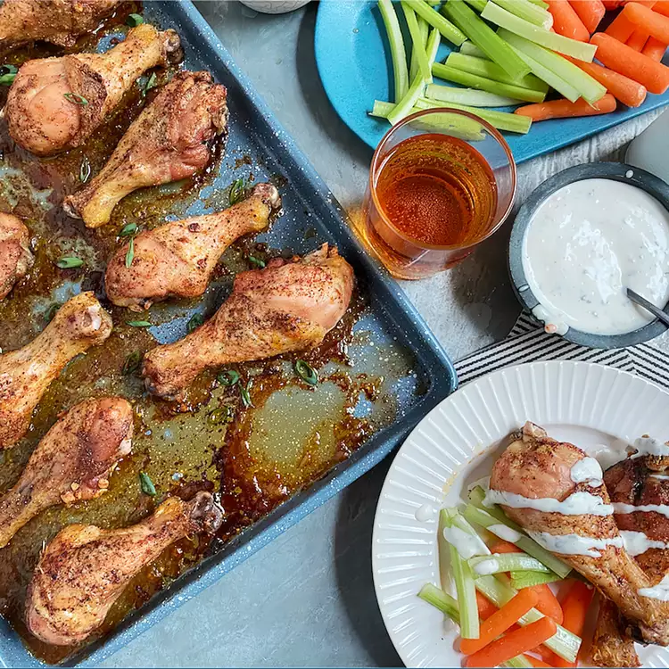

Baked Chicken Wings

Description
These baked chicken wings are easy, crispy, and delicious! I normally serve them with a side of rice, chicken gravy, and a vegetable or salad.
Ingredients
- 3 tablespoons olive oil
- 3 cloves garlic, pressed
- 2 teaspoons chili powder
- 1 teaspoon garlic powder
- salt and ground black pepper to taste
- 10 chicken wings
Steps
- Preheat the oven to 375 degrees F (190 degrees C).
- Combine olive oil, garlic, chili powder, garlic powder, salt, and pepper in a large, resealable bag; seal and shake to combine. Add chicken wings; reseal and shake to coat. Arrange chicken wings on a baking sheet.
- Cook chicken wings in the preheated oven until crisp and cooked through, about 1 hour.